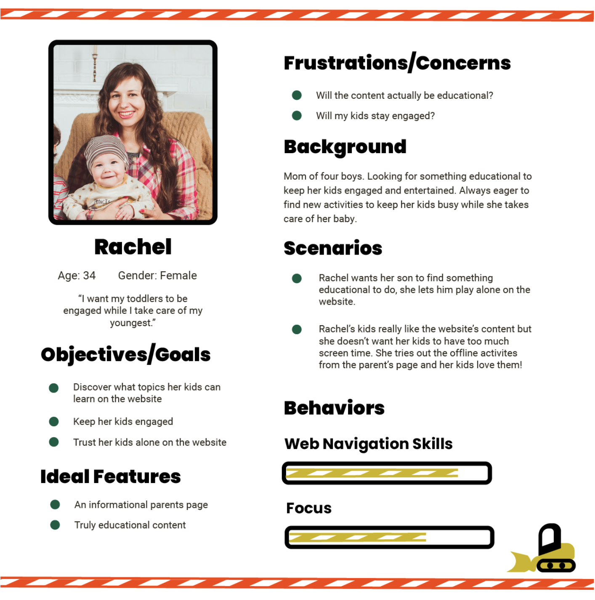

Personas
To begin with creating the website, I made three personas to represent the website's audience. I referenced these personas throughout the design process to make sure the website that I was creating was meeting their needs.
